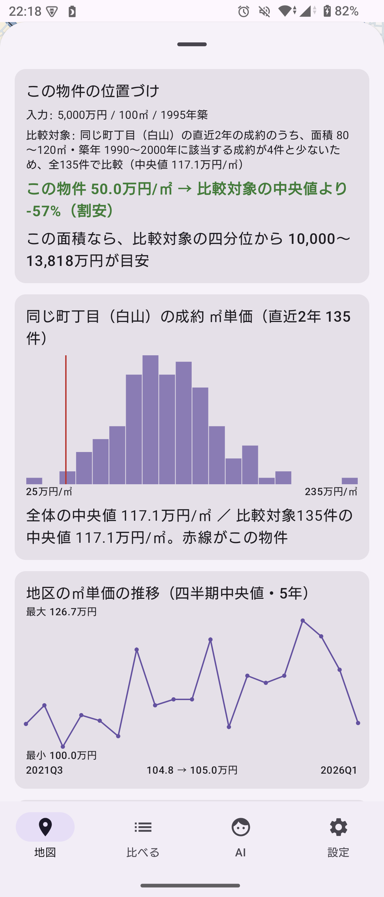
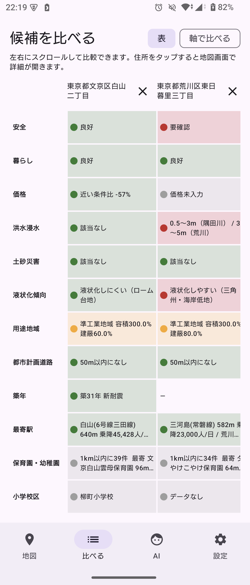
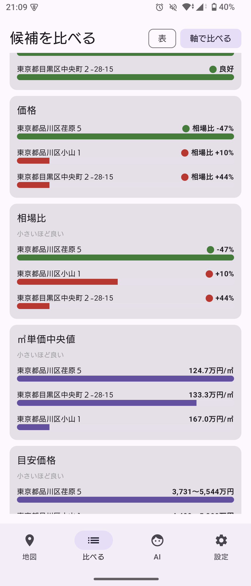
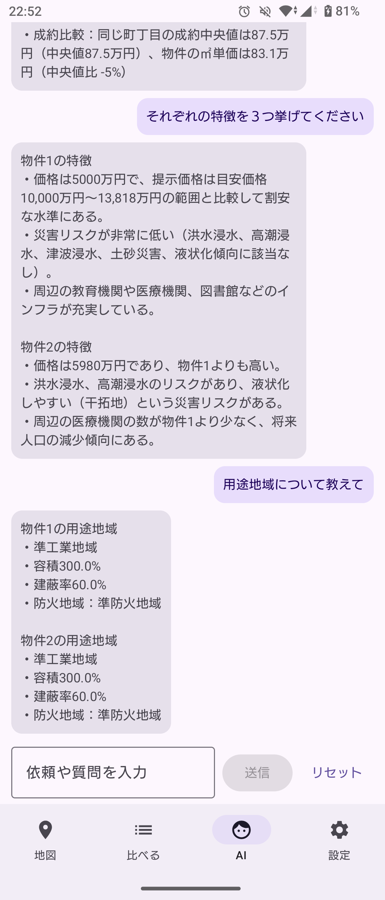
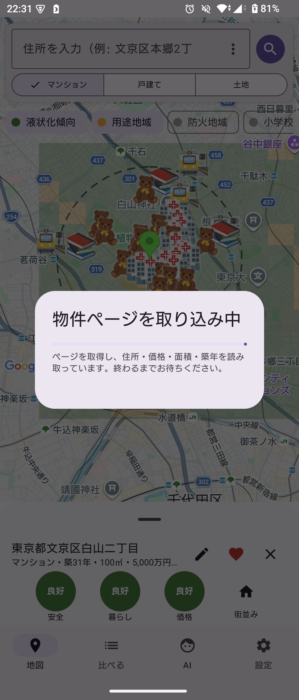
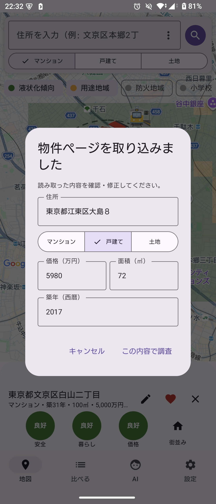
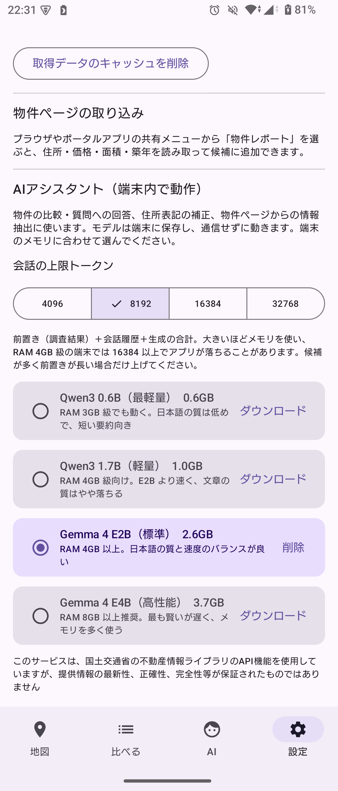

調べる - 災害・建築・価格を一括調査
国土交通省 不動産情報ライブラリのデータから、洪水・土砂・液状化・用途地域・周辺施設を調査。成約価格との比較で相場比や目安価格も表示します。


比べる - 表と軸の2通りで比較
気になる物件を候補に追加して比較。「表」では安全・暮らし・価格・洪水浸水・土砂災害・液状化・用途地域・築年・最寄駅・保育園・小学校区などを横並びで、「軸で比べる」では価格・相場比・㎡単価中央値・目安価格・駅距離・将来人口などを軸ごとの横棒で比べられます。住所タップで地図に戻って詳細を確認できます。

AIに相談 - 端末内で動作
調査結果をもとに物件の比較や質問に答えます。モデルは端末に保存し、通信せずに動くのでプライバシーも安心です。


取り込む - 物件ページを共有するだけ
ブラウザやポータルアプリの共有メニューから送ると、住所・価格・面積・築年を読み取って候補に追加。取り込み中は進捗を表示します。

設定 - APIキーとAIモデル
不動産情報ライブラリのAPIキー（無料申請）を入力し、端末のメモリに合ったAIモデルを選んでダウンロードします。
インストール手順
- 上のボタンからAPKをダウンロードする
- 「提供元不明のアプリ」の許可を求められたらブラウザに許可する
- 起動後、設定画面で不動産情報ライブラリのAPIキーを入力する（reinfolib.mlit.go.jp で無料申請）
- AI機能を使う場合は設定画面からモデル（約2.6GB、Wi-Fi推奨）をダウンロードする。地図タブを使う場合は開発者向けの手順（README参照）で地図キーが必要です